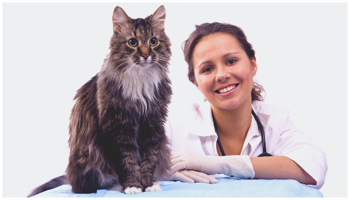

О нашей ветклинике "Baskerville"
Ветеринарная клиника "Baskerville" существует с 2009 года, но стаж наших сотрудников в сфере лечения мелких домашних и экзотических животных составляет гораздо больше – от 8 до 12 лет. Практическим опытом, накопленным за это время, мы делимся друг с другом и с успехом занимаемся лечением ваших питомцев, будь то суровый ротвейлер или маленький амурский полоз.
Сейчас практически каждый житель Москвы имеет дома питомца – кошку, собаку, птичку или даже питона. Они занимают место в нашем сердце и становятся полноправными членами семьи. Поэтому ветеринарные услуги в наше время столь востребованы. У нас работают специалисты как общей практики, так и узкой специализации – терапевт, дерматолог, стоматолог, орнитолог, ратолог, герпетолог. Главный врач клиники – кандидат ветеринарных наук, его специализация – стоматология, хирургия, ультразвуковая диагностика.
Мы рады предложить свою помощь для вашего животного, проконсультировать по кормлению и содержанию, провести диагностику заболеваний, а также составить план лечения, если это понадобится!!!
Как показывает практика, оказание ветеринарных услуг на дому приобрело популярность из-за очень многих факторов – не только из-за того, что владельцы животного не всегда могут доставить его самостоятельно в клинику в силу каких-либо ситуаций (размер собаки, тяжелое состояние питомца, отсутствие транспорта, отдаленность ветучреждения). Это также востребовано потому, что качество услуг «на дому» не уступает качеству лечения в самой ветеринарной клинике!
Специалисты ветклиники "Baskerville" оказывают полный спектр ветеринарных услуг – вакцинация всех видов животных, кастрация и стерилизация, хирургические операции любой сложности, лабораторные исследования.
Сделано при поддержке ИГУМО
